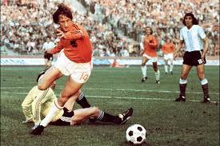

10.ª edición
Fútbol Total
Copa Mundial de la FIFA Alemania 1974
13 de junio – 7 de julio de 1974
País sede: Alemania Federal 🇩🇪
16 selecciones
38 partidos
Datos generales del torneo
- País sede: Alemania Federal 🇩🇪
- Ciudades sede: Múnich, Frankfurt, Düsseldorf, Dortmund, Berlín Oeste, Gelsenkirchen, Hannover, Hamburgo, Stuttgart
- Estadios: 9 recintos (incluyendo el Estadio Olímpico de Múnich)
- Selecciones participantes: 16
- Partidos jugados: 38
- Goles anotados: 97
- Campeón: Alemania Federal 🇩🇪
- Subcampeón: Países Bajos 🇳🇱
- Tercer lugar: Polonia 🇵🇱
- Cuarto lugar: Brasil 🇧🇷
- Máximo goleador: Grzegorz Lato (7 goles)
- Mejor jugador: Johan Cruyff 🇳🇱
- Mejor portero: Sepp Maier 🇩🇪
Jugadas y momentos destacados
Alemania 1974 pasó a la historia por el impacto del “Fútbol Total” de Países Bajos y la consagración de Alemania Federal en su propio territorio.

Resumen del torneo
-
Alemania 1974 fue escenario del célebre Fútbol Total, liderado por Johan Cruyff,
con un estilo revolucionario de movilidad y presión colectiva.
-
Por primera vez se instauró el nuevo trofeo FIFA World Cup que reemplazó a la Copa Jules Rimet.
-
La segunda fase tuvo dos grupos que definieron a los finalistas: Alemania y Países Bajos.
-
Polonia sorprendió al mundo con su ofensiva, terminando en tercer lugar con Lato como goleador.
-
En la final, Países Bajos sorprendió con un penal al minuto 2 sin que Alemania tocara la pelota,
pero la Mannschaft remontó 2–1 y conquistó su segundo título.
Fase final (últimos 4)
Grupo de semifinales (segunda fase)
- 🇳🇱 Países Bajos 2–0 Brasil 🇧🇷
- 🇩🇪 Alemania Federal 2–0 Polonia 🇵🇱
- 🇧🇷 Brasil 2–1 Alemania Oriental 🇩🇪
Final
- 🇩🇪 Alemania Federal 2–1 🇳🇱 Países Bajos
Alemania campeona del mundo
Tercer lugar
Selecciones participantes por grupo
Grupo 1
- 🇩🇪 Alemania Federal
- 🇨🇱 Chile
- 🇩🇪 Alemania Oriental
- 🇦🇺 Australia
Grupo 2
- 🇧🇷 Brasil
- 🇾🇺 Yugoslavia
- 🇸🇨 Escocia
- 🇿🇦 Zaire
Grupo 3
- 🇳🇱 Países Bajos
- 🇸🇪 Suecia
- 🇺🇾 Uruguay
- 🇧🇬 Bulgaria
Grupo 4
- 🇮🇹 Italia
- 🇦🇷 Argentina
- 🇵🇱 Polonia
- 🇭🇺 Hungría
Final: Alemania Federal vs Países Bajos
La final se disputó el 7 de julio de 1974 en el Estadio Olímpico de Múnich.
Alemania Federal derrotó 2–1 a los Países Bajos tras remontar un penal tempranero.
Alemania Federal 🇩🇪 – Alineación titular
- DT: Helmut Schön
- Sepp Maier (POR)
- Berti Vogts
- Franz Beckenbauer (C)
- Hans-Georg Schwarzenbeck
- Paul Breitner
- Rainer Bonhof
- Jürgen Grabowski
- Uli Hoeneß
- Berni Cullmann
- Gerd Müller
- Jupp Heynckes
Países Bajos 🇳🇱 – Alineación titular
- DT: Rinus Michels
- Jan Jongbloed (POR)
- Ruud Krol
- Wim Rijsbergen
- Arie Haan
- Wim Suurbier
- Johan Neeskens
- Wim Jansen
- Johnny Rep
- Rob Rensenbrink
- Willy van de Kerkhof
- Johan Cruyff (C)
Reseña general
Alemania 1974 fue un Mundial clave en la evolución táctica del fútbol. El “Fútbol Total” neerlandés marcó un antes
y un después en la historia del deporte, a pesar de no obtener el título.
Alemania Federal se consagró en casa con una mezcla de jerarquía, disciplina y figuras legendarias como
Beckenbauer, Maier, Müller y Breitner. El torneo dejó una huella imborrable en la cultura futbolística mundial.